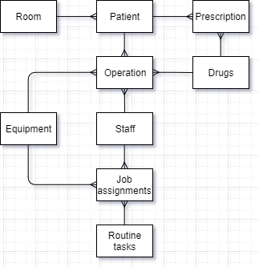

Entity-Relation Diagram
Hospital
Diagram of a Hospital
Contents:
Patients:
- Has a many to many relationship with drugs. One patient can be prescripted multiple drugs, and drugs are not exclusive to a single patient.
- Patients may need multiple operations to recover.
- Patients are assigned to one room, but they may share it with other patients.
Staff:
- Staff may be doctors, nurses, janatorial, administrative, etc. depending on what is specified in the object.
- Staff will be assigned to multiple operations or daily routine tasks
- There is a many to many relationship between staff and tasks. Routine task assignments may have multiple staff members assigned to each one.
Drugs/Equipment:
- Drugs and equipment may be assigned to multiple different operations.
- Routine job assignments may be assigned equipment. Each piece of equipment can be assigned to muliple jobs.